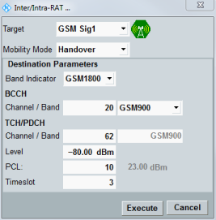

After you have completed the preparations described in the preceding section, perform the following steps to initiate a handover.
Press the "Inter/Intra-RAT ..." hotkey in the "WCDMA signaling" application.
The handover configuration dialog opens.
Select the GSM signaling application as handover target. Select mobility mode and the destination band and channel.
As a result, the GSM downlink signal is turned on automatically. Wait until the cell icon in the handover dialog indicates RDY (ready for handover).

To initiate the handover, press the "Execute" key in the dialog.
The WCDMA CS connection state changes from "Call Established" to "Outgoing Handover in Progress", while the GSM CS connection state changes from "ON" to "Incoming Handover in Progress".
When the handover has been completed, the WCDMA CS state changes to "ON", the GSM CS state to "Call Established" and the GSM cell state to "ON".